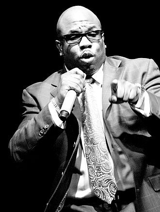

Wanya Morris
Wanyá "Squirt" Morris is an American singer, best known as a member of the R&B group Boyz II Men.
Complete Discography & Tracklists (4)
2000 Alive! 🎵 12 Tracks
2004 The Right Thing 🎵 12 Tracks
2020 Sometimes You Gotta Rewind to Go Fast Forward 🎵 1 Tracks
2025 Rust and Honey 🎵 0 Tracks
No tracks registered.